| name | owner | species | birthdate | weight | rating |
|---|---|---|---|---|---|
| Darwin | Lisa | ferret | 1998-04-02 | 1.2 | a little evil |
| Oy | Lisa | ferret | NA | 2.9 | very good |
| Khaleesi | Emily | cat | 2014-10-01 | 4.5 | very good |
| Bernie | Phil | dog | 2017-06-01 | 32.0 | very good |
3 Data Visualisation

Intended Learning Outcomes
Functions used
- built-in (you can always use these without loading any packages)
- tidyverse (you can use all these with
library(tidyverse))- readr::
readr::col_character(),readr::col_datetime(),readr::col_double(),readr::col_factor(),readr::col_integer(),readr::cols(),readr::read_csv() - lubridate::
lubridate::now(),lubridate::today() - dplyr::
dplyr::count(),dplyr::glimpse(), - ggplot2::
aes(),coord_cartesian(),element_blank(),facet_wrap(),geom_bar(),geom_boxplot(),geom_col(),geom_histogram(),geom_jitter(),geom_point(),geom_smooth(),ggplot(),ggsave(),ggtitle(),guides(),scale_fill_manual(),scale_x_continuous(),scale_x_date(),scale_x_discrete(),scale_y_continuous(),spec(),stat_summary(),theme(),theme_bw(),theme_minimal(),theme_set()
- readr::
- other (you need to load each package to use these)
- ggthemes::
ggthemes::theme_gdocs() - patchwork::
patchwork::plot_layout()
- ggthemes::
Set-up
- Open your
reproresproject - Create a new quarto file called
03-dataviz.qmd - Update the YAML header
- Replace the setup chunk with the one below:
```{r}
#| label: setup
#| include: false
library(tidyverse) # includes readr, ggplot2, dplyr, and lubridate
library(patchwork) # for multi-part plots
library(ggthemes) # for plot themes
```If you get the message Error in library(x) : there is no package called ‘x’, please refer to Section 1.2.1.
We’d recommend making a new code chunk for each different activity, and using the white space to make notes on any errors you make, things you find interesting, or questions you’d like to ask the course team.
Download the ggplot2 cheat sheet.
3.1 Variable types
If a spreadsheet is in a tidy data format, each row is an observation, each column is a variable, and the information in each cell is a single value. We’ll learn more about how to get our data into this format in Chapter 6, but to get started we’ll use datasets with the right format.
For example, the table below lists pets owned by members of the psyTeachR team. Each row is an observation of one pet. There are 6 variables for each pet, their name, owner, species, birthdate, weight (in kg), and rating (on a 5-point scale from “very evil” to “very good”).
Variables can be classified as continuous (numbers) or categorical (labels). When you’re plotting data, it’s important to know what kind of variables you have, which can help you decide what types of plots are most appropriate. Each variable also has a data type, such as numeric (numbers), character (text), or logical (TRUE/FALSE values). Some plots can only work on some data types. Additionally, Appendix H has more details, as this concept will be relevant repeatedly.

3.1.1 Continuous
Continuous variables are properties you can measure, like weight. You can use continuous variables in mathematical operations, like calculating the sum total of a column of prices or the average number of social media likes per day. They may be rounded to the nearest whole number, but it should make sense to have a measurement halfway between.
Continuous variables always have a numeric data type. They are either integers like 42 or doubles like 3.14159.
3.1.2 Categorical
Categorical variables are properties you can count, like the species of pet. Categorical variables can be <a href=‘https://psyteachr.github.io/glossary/n#nominal’ target=’_blank’ class=‘glossary’ title=‘Categorical variables that don’t have an inherent order, such as types of animal.’>nominal, where the categories don’t really have an order, like cats, dogs and ferrets (even though ferrets are obviously best), or ordinal, where they have a clear order but the distance between the categories isn’t something you could exactly equate, like points on a Likert rating scale. Even if a data table uses numbers like 1-7 to represent ordinal variables, you shouldn’t treat them like continuous variables.
Categorical data can have a character data type, also called strings. These are made by putting text inside of quotes. That text can be letters, punctuation, or even numbers. For example, "January" is a character string, but so is "1" if you put it in quotes. The character data type is best for variables that can have a lot of different values that you can’t predict ahead of time.
Categorical data can also be factors, a specific type of integer that lets you specify the category names and their order. This is useful for making plots display with categories in the order you want (otherwise they default to alphabetical order). The factor data type is best for categories that have a specific number of levels.
Do not factor numbers
If you factor numeric data, it gets converted to the integers 1 to the number of unique values, no matter what the values are. Additionally, you can no longer use the values as numbers, such as calculating the mean.
Sometimes people represent categorical variables with numbers that correspond to names, like 0 = “no” and 1 = “yes”, but values in between don’t have a clear interpretation. If you have control over how the data are recorded, it’s better to use the character names for clarity. You’ll learn how to recode columns in Chapter 7.
3.1.3 Dates and times
Dates and times are a special case of variable. They can act like categorical or continuous variables, and there are special ways to plot them. Dates and times can be hard to work with, but the
[1] "2025-09-15 16:06:52 GMT"Coming back to the pets dataset, what type of variable is in each column? You can use the function glimpse() to show a list of the column names, their data types, and the first few values in each column - here is the output of running glimpse() on the pets dataset.
Rows: 4
Columns: 6
$ name <chr> "Darwin", "Oy", "Khaleesi", "Bernie"
$ owner <chr> "Lisa", "Lisa", "Emily", "Phil"
$ species <fct> ferret, ferret, cat, dog
$ birthdate <date> 1998-04-02, NA, 2014-10-01, 2017-06-01
$ weight <dbl> 1.2, 2.9, 4.5, 32.0
$ rating <fct> a little evil, very good, very good, very good| Column | Variable type | Data type |
|---|---|---|
name |
||
owner |
||
species |
||
birthdate |
||
weight |
||
rating |
3.2 Building plots
There are multiple approaches to data visualisation in R; in this course we will use the popular package
Figure 3.2 displays the evolution of a simple scatterplot using this layered approach. First, the plot space is built (layer 1); the variables are specified (layer 2); the type of visualisation (known as a geom) that is desired for these variables is specified (layer 3) - in this case geom_point() is called to visualise individual data points; a second geom is added to include a line of best fit (layer 4), the axis labels are edited for readability (layer 5), and finally, a theme is applied to change the overall appearance of the plot (layer 6).

Importantly, each layer is independent and independently customisable. For example, the size, colour and position of each component can be adjusted, or one could, for example, remove the first geom (the data points) to only visualise the line of best fit, simply by removing the layer that draws the data points (Figure 3.3). The use of layers makes it easy to build up complex plots step-by-step, and to adapt or extend plots from existing code.
3.2.1 Loading data
Let’s build up the plot above, layer by layer. First we need to get the data. We’ll learn how to load data from different sources in Appendix G, but this time we’ll use the same method as we did in Section 2.5.3 and load it from an online source.
Load the data by copying the following into a code block in your script, and running the code.
When you load the data, read_csv() will produce a message that gives you information about the data it has imported and what assumptions it has made. The “column specification” tells you what each column is named and what type of data R has categorised each variable as. The abbreviation “chr” is for character columns, “dbl” is for double columns, and “dttm” is a date/time column.
This data is from the World Bank’s Poverty and Inequality Platform (accessed on 2025-08-05).
The first thing you should do when you need to plot data is to get familiar with what all of the rows (observations) and columns (variables) mean. Sometimes this is obvious, and sometimes it requires help from the data provider. Here, each row represents data for one region for one year.
-
region_nameis the name of the world region, like “South Asia” -
region_codeis the 3-letter abbreviation for region -
country_nameis the name of the country -
country_codeis the 3-letter country code -
reporting_yearis a year 1963 - 2024 -
reporting_levelis “national” for this entire dataset -
giniis a measure of inequality that ranges from 0 (perfect equality) to 1 (complete inequality) -
welfare_meanis average welfare per capita (see the methodology page for more info on how this is calculated) -
welfare_medianis the amount of welfare per capita that divides the distribution into two equal halves
Unless you specify the column types, data importing functions will just guess the types and usually default to double for columns with numbers and character for columns with letters.
Use the function spec() to find out all of the column types and edit them if needed.
Let’s set region_name and region_code as factors and set the order of the levels. By default, R will order the levels of a factor alphanumerically, however in many cases you will want or need to set your own order. For example, in this data, it might make sense to order the regions from least to most countries. You can do this with the count() function.
| region_name | region_code | n |
|---|---|---|
| Other High Income Countries | OHI | 27 |
| Europe & Central Asia | ECA | 21 |
| Latin America & Caribbean | LAC | 11 |
| Sub-Saharan Africa | SSA | 10 |
| East Asia & Pacific | EAP | 7 |
| Middle East & North Africa | MNA | 4 |
| South Asia | SAS | 3 |
Assign this table to an object called regions, then make two new objects for the levels, which are the relevant column from this table, but in reverse order using rev().
Get the code to create the vectors for region_name_levels and region_code_levels with the dput() function.
c("South Asia", "Middle East & North Africa", "East Asia & Pacific",
"Sub-Saharan Africa", "Latin America & Caribbean", "Europe & Central Asia",
"Other High Income Countries")After you update the column types, you have to re-import the data by adjusting the read_csv() code to set the col_types argument to the new column types. This is why you have to “hard code” the levels, since you won’t have read in the data yet when you need to use them.
Update your data import code block to look like the one below.
# updated column types
region_name_levels <- c("South Asia",
"Middle East & North Africa",
"East Asia & Pacific",
"Sub-Saharan Africa",
"Latin America & Caribbean",
"Europe & Central Asia",
"Other High Income Countries")
region_code_levels <- c("SAS", "MNA", "EAP", "SSA", "LAC", "ECA", "OHI")
pip_col_types <- cols(
region_name = col_factor(levels = region_name_levels),
region_code = col_factor(levels = region_code_levels),
country_name = col_character(),
country_code = col_character(),
reporting_year = col_double(),
reporting_level = col_character(),
gini = col_double(),
welfare_mean = col_double(),
welfare_median = col_double()
)
# re-import data with correct column types
pip <- read_csv("data/pip_gini_welfare_2010.csv",
col_types = pip_col_types)
Define objects before you use them
Because read_csv() is going to use the object pip_col_types, you must create pip_col_types before you run the adjusted read_csv() code. If you ever need to adjust your code, try to think about the order that the code will run in if you start from scratch and make sure it’s organised appropriately.
3.2.2 Plot setup
3.2.2.1 Default theme
Plots in this book use the black-and-white theme, not the default grey theme, so set your default theme to the same so your plots will look like the examples below. At the top of your script, in the setup chunk after you’ve loaded the tidyverse package, add the following code and run it. You’ll learn more ways to customise your theme in Section 3.2.3.5 and Section K.3.
3.2.2.2 Data
Every plot starts with the ggplot() function and a data table. If your data are not loaded or you have a typo in your code, this will give you an error message. It’s best to check your plot after each step, so that you can figure out where errors are more easily.

3.2.2.3 Mapping
The next argument to ggplot() is the mapping. This tells the plot which columns in the data should be represented by, or “mapped” to, different aspects of the plot, such as the x-axis, y-axis, line colour, object fill, or line style. These aspects, or “aesthetics”, are listed inside the aes() function.
Set the arguments x and y to the names of the columns you want to be plotted on those axes. Here, we want to plot the wait time on the x-axis and the call time on the y-axis.
In the example above, we wrote out the names of the arguments data and mapping, but in practice, almost everyone omits them. Just make sure you put the data and mapping in the right order.
3.2.2.4 Geoms
Now we can add our plot elements in layers. These are referred to as geoms and their functions start with geom_. You add layers onto the base plot created by ggplot() with a plus (+).
Add a scatterplot to your plot using geom_point().
Location of the +
Somewhat annoyingly, the plus has to be on the end of the previous line, not at the start of the next line. If you do make this mistake, it will run the first line of code to produce the base layer but then you will get the following error message rather than adding on geom_point().

3.2.2.5 Multiple geoms
Part of the power of

Add another geom to your plot. Add another code block and copy the plot code, changing the order of geoms. Do they look different?
3.2.2.6 Plot objects
Just like you can save numbers and data tables to objects, you can also save the output of ggplot(). The code below produces the same plots we created above but saves them to objects named point_first and line_first. If you run just this code, the plots won’t display like they have done before. Instead, you’ll see the object names appear in the environment pane.
To view the plots, call the objects by name. This will output each plot separately.
Save your two plots to objects with appropriate names.
3.2.2.7 Combining plots
One of the reasons to save your plots to objects is so that you can combine multiple plots using functions from the patchwork package. The code below produces the plot above by combining the two plots with + and then specifying that we want the plots produced on a single row with the nrow argument in plot_layout().
Combine your plots using plot_layout(). Try changing the value of nrow to 2.
3.2.3 Customising plots
There are nearly endless ways to customise ggplots. We’ll cover a few of the basic customisations here.
3.2.3.1 Styling geoms
We should definitely put the line in front of the points, but the points are still a bit dark. If you want to change the overall style of a geom, you can set the arguments colour, alpha, shape, size and linetype inside the geom function. There are many different values that you can set these to; Appendix K gives details of these.
ggplot(pip, aes(x = gini, y = welfare_mean)) +
geom_point(colour = "dodgerblue",
alpha = 0.2, # 20% transparency
shape = 18, # solid diamond
size = 2) +
# setting method & formula avoids an annoying message
geom_smooth(method = lm, # method of linear model (lm)
formula = y~x, # formula used to draw line
colour = rgb(0, .5, .8),
linetype = 3)
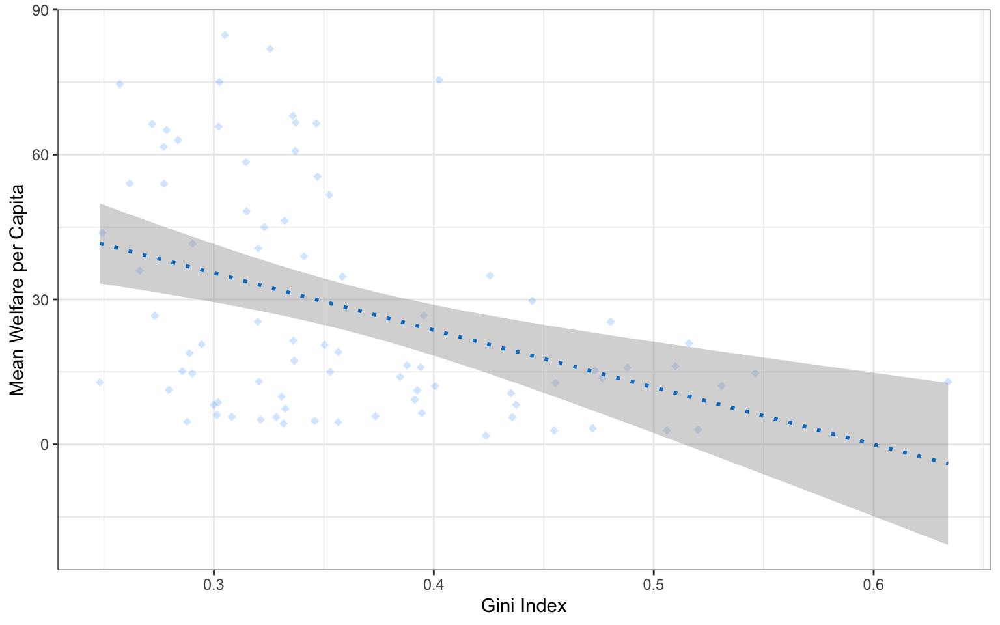
Play around with different values above and figure out what the default values are for shape and size.
Setting aesthetics overall versus by category
This method is only for changing the style of all the shapes made with that geom. If you want, for example, points to have different colours depending on which region they are from, you set the argument colour = region inside the aes() function for the mapping. You can customise the colours used with scale_ functions, which you will learn about below and in Appendix K.
3.2.3.2 Format axes
Now we need to make the axes look neater. There are several functions you can use to change the axis labels, but the most powerful ones are the scale_ functions. You need to use a scale function that matches the data you’re plotting on that axis and this is where it becomes particularly important to know what type of data you’re working with. Both of the axes here are continuous, so we’ll use scale_x_continuous() and scale_y_continuous().
ggplot(pip, aes(x = gini, y = welfare_mean)) +
geom_point(colour = "dodgerblue",
alpha = 0.2) +
geom_smooth(method = lm,
formula = y~x,
colour = rgb(0, .5, .8)) +
# customise axis labels and breaks
scale_x_continuous(name = "Gini Index",
breaks = seq(from = 0, to = 1, by = .1))The name argument changes the axis label. The breaks argument sets the major units and needs a vector of possible values, which can extend beyond the range of the data (e.g., gini values in this set are only between 0.2 and 0.7, but we can specify breaks 0-1 to make the maths easier or anticipate updates to the data). The seq() function creates a sequence of numbers from one to another by specified steps.
Set the y-axis name to “Mean Welfare per Capita” and the breaks to every 20 with minor breaks every 5. Check the help for ?scale_y_continuous to see how you would set the minor units.
ggplot(pip, aes(x = gini, y = welfare_mean)) +
geom_point(colour = "dodgerblue",
alpha = 0.2) +
geom_smooth(method = lm,
formula = y~x,
colour = rgb(0, .5, .8)) +
# customise axis labels and breaks
scale_x_continuous(name = "Gini Index",
breaks = seq(from = 0, to = 1, by = .1)) +
scale_y_continuous(name = "Mean Welfare per Capita",
breaks = seq(from = 0, to = 100, by = 20),
minor_breaks = seq(from = 0, to = 100, by = 5))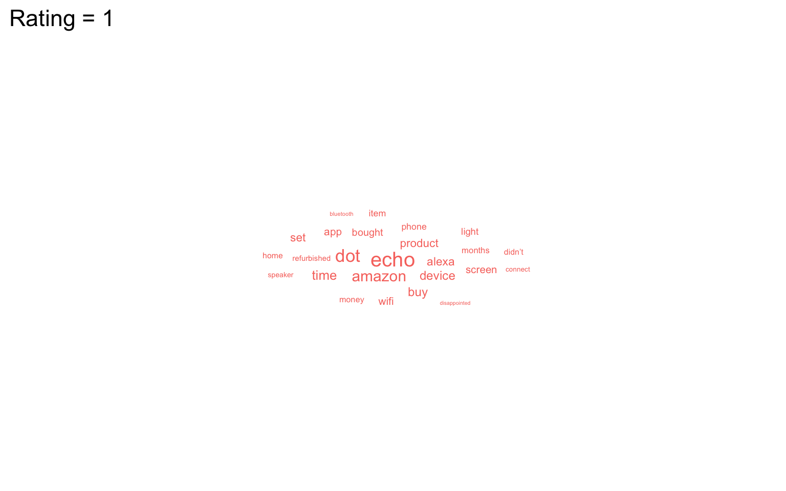
3.2.3.3 Axis limits
If you want to change the minimum and maximum values on an axis, use the coord_cartesian() function. Many plots make more sense if the minimum and maximum values represent the range of possible values, even if those values aren’t present in the data. Here, the mean_welfare ranges between 0 and 100.
ggplot(pip, aes(x = gini, y = welfare_mean)) +
geom_point(colour = "dodgerblue",
alpha = 0.2) +
geom_smooth(method = lm,
formula = y~x,
colour = rgb(0, .5, .8)) +
scale_x_continuous(name = "Gini Index",
breaks = seq(from = 0, to = 1, by = .1)) +
scale_y_continuous(name = "Mean Welfare",
breaks = seq(from = 0, to = 100, by = 20),
minor_breaks = seq(from = 0, to = 100, by = 5)) +
# set axis limits
coord_cartesian(ylim = c(0, 100))
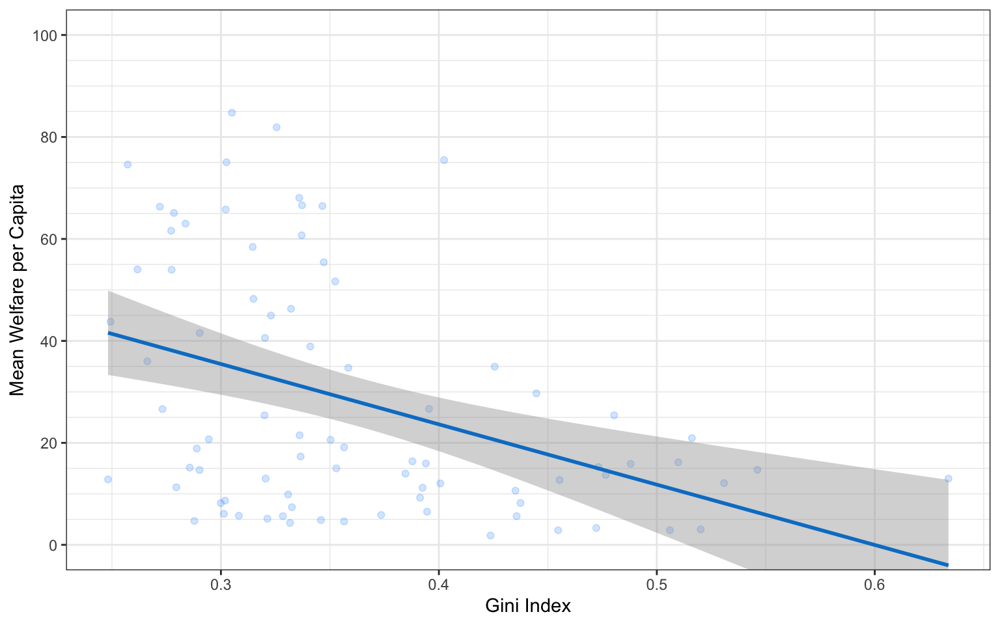
Setting limits with the scale_ function
You can also set the limits argument inside the scale_ functions, but this actually removes any data that falls outside these limits, rather than cropping your plot, and this can change the appearance of certain types of plots like violin plots and density plots.
3.2.3.4 Axis transforming
The y-axis values are concentrated at the lower range. This plot might be easier to read if we transform the y-axis to a log10 version. Change scale_y_continuous() to scale_y_log10()` to see if this works. We also need to change the name for the y-axis to “Mean Welfare (log10)” and set the breaks a little differently.
y_breaks <- c(1, 2, 5, 10, 20, 50, 100)
y_breaks_minor <- c(1:5, seq(10, 50, 10), 50, 100)
ggplot(pip, aes(x = gini, y = welfare_mean)) +
geom_point(colour = "dodgerblue",
alpha = 0.2) +
geom_smooth(method = lm,
formula = y~x,
colour = rgb(0, .5, .8)) +
scale_x_continuous(name = "Gini Index",
breaks = seq(from = 0, to = 1, by = .1)) +
scale_y_log10(name = "Mean Welfare (log10)",
breaks = y_breaks,
minor_breaks = y_breaks_minor) +
# set axis limits
coord_cartesian(ylim = c(1, 100))3.2.3.5 Themes
theme_minimal() and theme_bw(), but the base_size argument.
It’s also worth highlighting that this code is starting to look quite complicated because of the number of layers, but because we’ve built it up slowly it should (hopefully!) make sense. If you see examples of
ggplot(pip, aes(x = gini, y = welfare_mean)) +
geom_point(colour = "dodgerblue",
alpha = 0.2) +
geom_smooth(method = lm,
formula = y~x,
colour = rgb(0, .5, .8)) +
scale_x_continuous(name = "Gini Index",
breaks = seq(from = 0, to = 1, by = .1)) +
scale_y_log10(name = "Mean Welfare (log10)",
breaks = y_breaks,
minor_breaks = y_breaks_minor) +
coord_cartesian(ylim = c(1, 100)) +
# change the theme
theme_light(base_size = 11)
3.2.3.6 Theme tweaks
If you’re still not quite happy with a theme, you can customise it even further with the themes() function. Check the help for this function to see all of the possible options. The most common thing you’ll want to do is to remove an element entirely. You do this by setting the relevant argument to element_blank(). Below, we’re getting rid of the plot background, which removes the line around the plot.
ggplot(pip, aes(x = gini, y = welfare_mean)) +
geom_point(colour = "dodgerblue",
alpha = 0.2) +
geom_smooth(method = lm,
formula = y~x,
colour = rgb(0, .5, .8)) +
scale_x_continuous(name = "Gini Index",
breaks = seq(from = 0, to = 1, by = .1)) +
scale_y_log10(name = "Mean Welfare (log10)",
breaks = y_breaks,
minor_breaks = y_breaks_minor) +
coord_cartesian(ylim = c(1, 100)) +
theme_light(base_size = 11) +
# customise theme elements
theme(plot.background = element_blank())3.2.4 Figure captions
You can add a caption directly to the image using the labs() function, which also allows you to add or edit the title, subtitle, and axis labels.
ggplot(pip, aes(x = gini, y = welfare_mean)) +
geom_point(colour = "dodgerblue",
alpha = 0.2) +
geom_smooth(method = lm,
formula = y~x,
colour = rgb(0, .5, .8)) +
scale_x_continuous(name = "Gini Index",
breaks = seq(from = 0, to = 1, by = .1)) +
scale_y_log10(name = "Mean Welfare (log10)",
breaks = y_breaks,
minor_breaks = y_breaks_minor) +
coord_cartesian(ylim = c(1, 100)) +
theme_light(base_size = 11) +
theme(plot.background = element_blank()) +
# add labels
labs(title = "The relationship between Gini index and mean welfare per captita",
subtitle = "Data from 2010",
caption = "Figure 1. Inequality and welfare have a negative relationship.")
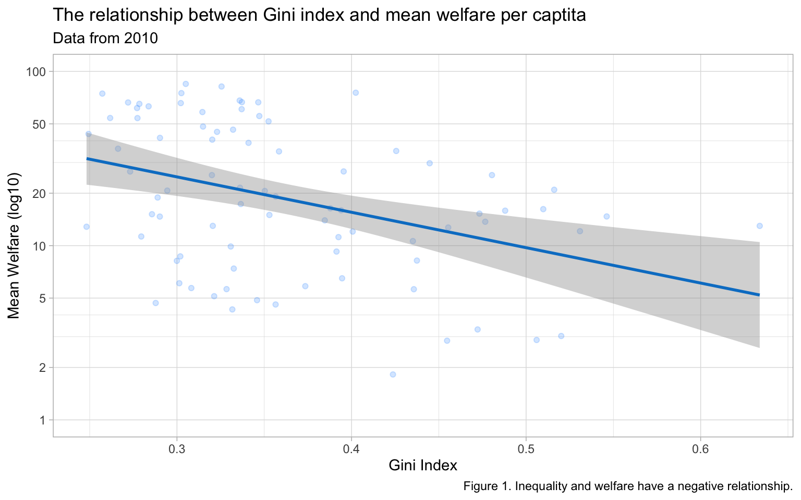
However, it is more accessible to include this sort of information in plain text for screen readers. You can add a text caption in the chunk header. You can also add alt-text descriptions for screen readers that describe the image.
```{r}
#| label: fig-gini-welfare
#| fig-cap: "Inequality and welfare have a negative relationship."
#| fig-alt: "A scatterplot showing Gini index on the x-axis (range ~0.2-0.65) and mean welfare per capita on the y-axis (range 0-100) with a trend line showing that as gini increases from about 0.2 to 0.65, welfare decreases from about 30 to about 5."
# figure code here
```3.2.5 Saving Plots
You can save a ggplot using ggsave(). It saves the last ggplot you made, by default, but you can specify which plot you want to save if you assigned that plot to a variable.
You can set the width and height of your plot. The default units are inches, but you can change the units argument to “in”, “cm”, or “mm”.
Note
The file type is set from the filename suffix, or by specifying the argument device, which can take the following values: “eps”, “ps”, “tex”, “pdf”, “jpeg”, “tiff”, “png”, “bmp”, “svg” or “wmf”.
3.3 Appropriate plots
Now that you know how to build up a plot by layers and customise its appearance, you’re ready to learn about some more plot types. Different types of data require different types of plots, so this section is organised by data type.
The ggplot2 cheat sheet is a great resource to help you find plots appropriate to your data, based on how many variables you’re plotting and what type they are. The examples below all use the same poverty and inequality platform data, but each plot communicates something different.
We don’t expect you to memorise all of the plot types or the methods for customising them, but it will be helpful to try out the code in the examples below for yourself, changing values to test your understanding.
3.3.1 Counting categories
3.3.1.1 Bar plot
If you want to count the number of things per category, you can use geom_bar(). You only need to provide a x mapping to geom_bar() because by default geom_bar() uses the number of observations in each group of x as the value for y, so you don’t need to tell it what to put on the y-axis.
You probably want to customise some things, like the colours, order of the columns, and their labels. Inspect the code below and try running it layer by layer to figure out where these things change. The functions scale_fill_manual() and scale_x_discrete() are new, but work in the same way as the other scale_ functions. You’ll learn more about this in Section 10.1.
ggplot(pip, aes(x = region_code,
fill = region_code)) +
geom_bar() +
scale_x_discrete(
# change axis title
name = "Region",
# change order
limits = c("ECA", "SAS", "EAP", "MNA", "SSA", "LAC", "OHI"),
# change labels (\n creates a line break)
labels = c("Europe &\nC. Asia",
"S. Asia",
"E.Asia &\nPacific",
"M.East &\nN.Africa",
"Subsaharan\nAfrica",
"L.America &\nCarribean",
"Other H.I.")
) +
scale_fill_manual(
# change colours
values = c("ECA" = "firebrick",
"SAS" = "darkorange",
"EAP" = "goldenrod",
"MNA" = "darkgreen",
"SSA" = "dodgerblue3",
"LAC" = "darkorchid",
"OHI" = "hotpink"),
# remove the legend
guide = "none"
) +
scale_y_continuous(
name = "", # remove axis title
# remove the space above and below the y-axis
expand = expansion(add = 0)
) +
# minimum = 0, maximum = 30
coord_cartesian(ylim = c(0, 30)) +
ggtitle("Number of countries per region") # add a title3.3.1.2 Column plot
If your data already have a column with the number you want to plot, you can use geom_col() to plot it. We can use the count() function to make a table with a row for each region_code and a column called n with the number of observations in that category.
| region_code | n |
|---|---|
| SAS | 3 |
| MNA | 4 |
| EAP | 7 |
| SSA | 10 |
| LAC | 11 |
| ECA | 21 |
| OHI | 27 |
The mapping for geom_col() requires you to set both the x and y aesthetics. Set y = n because we want to plot the number of countries in each category, and that information is in the column called n.

3.3.1.3 Pie chart
Pie charts are a misleading form of data visualisation, so we won’t cover them. We’ll cover options for visualising proportions, like waffle, lollipop and treemap plots, in Section 10.1.4.
Test your understanding; here is a small data table.
| country | population | island |
|---|---|---|
| Northern Ireland | 1,895,510 | Ireland |
| Wales | 3,169,586 | Great Britain |
| Republic of Ireland | 4,937,786 | Ireland |
| Scotland | 5,466,000 | Great Britain |
| England | 56,550,138 | Great Britain |
What geom would you use to plot the population for each of the 5 countries?
-
What mapping would you use?
What geom would you use to plot the number of countries on each island?
-
What mapping would you use?
3.3.2 One continuous variable
If you have a continuous variable, like welfare_mean, you can use geom_histogram() to show the distribution. Just like geom_bar() you are only required to specify the x variable.
A histogram splits the data into “bins” along the x-axis and shows the count of how many observations are in each bin along the y-axis.
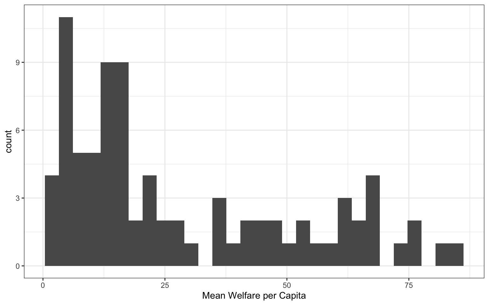
You should always set the binwidth or number of bins to something meaningful for your data (otherwise you get the annoying message above). You might need to try a few options before you find something that looks good and conveys the meaning of your plot – try changing the values of binwidth and bins in the code below to see what works best.
By default, the bars start centered on 0, so if binwidth is set to 5, the first bar would include -2.5 to +2.5, which doesn’t make much sense. We can set boundary = 0 so that each bar represents increments of 5 starting from 0.
Finally, the default style of grey bars is ugly, so you can change that by setting the fill and colour, as well as using scale_x_continuous() to update the axis labels.
ggplot(pip, aes(x = welfare_mean)) +
geom_histogram(binwidth = 5,
boundary = 0,
fill = "white",
color = "black") +
scale_x_continuous(name = "Mean Welfare per Capita",
breaks = seq(0, 100, 10))Test your understanding
Imagine you have a table of the population for each country in the world with the columns country and population. We’ll just look at the 76 countries with populations of less than a million.

- How would you set the mapping for this plot?
- What is the
binwidthof the histogram?
3.3.3 Grouped continuous variables
There are several ways to compare continuous data across groups. Which you choose depends on what point you are trying to make with the plot.
3.3.3.1 Stacked histogram
In previous plots, we have used fill purely for visual reasons, e.g., we changed the colour of the histogram bars to make them look nicer. However, you can also use fill to represent another variable so that the colours become meaningful.
Setting the fill aesthetic in the mapping will produce different coloured bars for each category of the fill variable, in this case region_code.
ggplot(pip, aes(x = welfare_mean, fill = region_code)) +
geom_histogram(boundary = 0,
binwidth = 5,
color = "black")
Arguments inside aes()
When you set an aspect to represent the data, you do this inside the aes() function for the mapping, not as an argument to the geom. If you try to set this in a geom, you’ll get the following error (unless you coincidentally have an object named region_code that is a colour word).
3.3.3.2 Dodged histogram
By default, the categories are positioned stacked on top of each other. If you want to compare more than one distribution, you can set the position argument of geom_histogram() to “dodge” to put the bars for each group next to each other instead of stacking them. However, this can look confusing with several categories.
# dodged histogram
ggplot(pip, aes(x = welfare_mean,
fill = region_code,
colour = region_code))+
geom_histogram(boundary = 0,
binwidth = 5,
position = "dodge") +
scale_x_continuous(name = "Mean Welfare per Capita",
breaks = seq(0, 100, 10))
Frequency plot alternative
Alternatively, you can use geom_freqpoly() to plot a line connecting the top of each bin.
3.3.3.3 Violin plot
Another way to compare groups of continuous variables is the violin plot. This is like a density plot, but rotated 90 degrees and mirrored - the fatter the violin, the larger proportion of data points there are at that value.
violin_area <-
ggplot(pip, aes(x = region_code, y = welfare_mean)) +
geom_violin(scale = "area") +
ggtitle('scale = "area" (default)')
violin_count <-
ggplot(pip, aes(x = region_code, y = welfare_mean)) +
geom_violin(scale = "count") +
ggtitle('scale = "count"')
violin_width <-
ggplot(pip, aes(x = region_code, y = welfare_mean)) +
geom_violin(scale = "width") +
ggtitle('scale = "width"')
violin_area / violin_count / violin_width
3.3.3.4 Boxplot
Boxplots serve a similar purpose to violin plots (without the giggles from the back row). They don’t show you the shape of the distribution, but rather some statistics about it. The middle line represents the median; half the data are above this line and half below it. The box encloses the 25th to 75th percentiles of the data, so 50% of the data falls inside the box. The “whiskers” extending above and below the box extend 1.5 times the height of the box, although you can change this with the coef argument. The points show outliers – individual data points that fall outside of this range.
Boxplots can be horizontal if you swap to x and y columns, and there are many other customisations you can apply.
boxplot <- ggplot(pip, aes(x = region_code, y = welfare_mean)) +
geom_boxplot() +
ggtitle("Default vertical boxplot")
custom <- ggplot(pip, aes(x = region_code, y = welfare_mean)) +
geom_boxplot(fill = "grey80",
outlier.colour = "red",
outlier.shape = 8,
coef = 1, # length of whiskers relative to box
varwidth = TRUE, # set width proportional to sample size
staplewidth = 0.2) +
ggtitle("Customised horizontal boxplot")
boxplot + custom
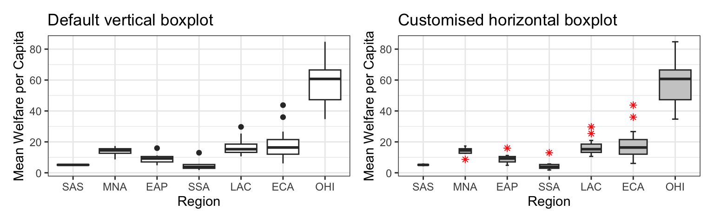
3.3.3.5 Combo plots
Violin plots are frequently layered with other geoms that represent the mean or median values in the data. This is a lot of code; to help your understanding, run it layer by layer to see how it builds up and change the values throughout the code.
# add fill and colour to the mapping
ggplot(pip, aes(x = region_code,
y = welfare_mean,
fill = region_code,
colour = region_code)) +
scale_x_discrete(name = "Region") +
scale_y_continuous(name = "Mean Welfare per Capita",
breaks = seq(0, 100, 10)) +
coord_cartesian(ylim = c(0, 100)) +
guides(fill = "none", colour = "none") +
# add a violin plot
geom_violin(draw_quantiles = 0.5, # adds a line at median (50%) score
alpha = 0.4,
scale = "width") +
# add a boxplot
geom_boxplot(width = 0.25,
fill = "white",
alpha = 0.75,
fatten = 0, # removes the median line
outlier.alpha = 0) +
# add a point that represents the mean
stat_summary(fun = mean,
geom = "point",
size = 2,
shape = 18) +
ggtitle("ViolinBox")
Misleading Bar Charts
A very common type of plot is to produce a bar chart of means, however, the example below demonstrates just how misleading this is. It communicates the mean value for each category, but the bars hide the distribution of the actual data. You can’t tell if most wait times are close to 3 minutes, or spread from 0 to 6 minutes, or if the vast majority are less than 2 minutes, but the mean is pulled up by some very high outliers.
Column plots can also be very misleading. The plot on the left starts the y-axis at 0, which makes the bar heights proportional. Since the differences are hard to see, you may be tempted to start the y-axis higher, but that makes it look like the gini index for LAC is many times higher than for SSA, rtather than only about 50% higher.
Test your understanding
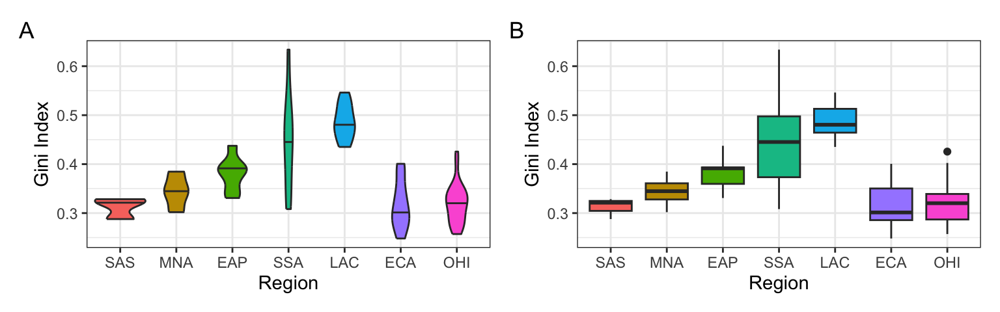
- How would you create plot A?
- How would you create plot B?
- What does the mapping look like for both plots?
- Which region has the highest median Gini index?
3.3.4 Two continuous variables
When you want to see how two continuous variables are related, set one as the x-axis and the other as the y-axis. Usually, if one variable causes the other, you plot the cause on the x-axis and the effect on the y-axis. Here, we want to see if longer wait times cause the calls to be longer.
3.3.4.1 Scatterplot
The function to create a scatterplot is called geom_point().

3.3.4.2 Trendlines
In Figure 3.2, we emphasised the relationship between Gini index and welfare with a trendline created by geom_smooth() using the argument method = lm (“lm” stands for “linear model” or a straight line relationship). You can also set method = loess to visualise a non-linear relationship.
The formula will default to y~x (y predicted by x), but if you suspect a different relationship, you can change this, such as to the equation for a quadratic relationship (y~x + I(x^2)).
loess_plot <-
ggplot(pip, aes(x = gini, y = welfare_mean)) +
geom_point(alpha = 0.2) +
geom_smooth(method = loess, formula = y~x) +
ggtitle("Default: method = loess, formula = y~x")
lm_plot <-
ggplot(pip, aes(x = gini, y = welfare_mean)) +
geom_point(alpha = 0.2) +
geom_smooth(method = lm, formula = y~x) +
ggtitle("Linear: method = lm, formula = y~x")
lm2_plot <-
ggplot(pip, aes(x = gini, y = welfare_mean)) +
geom_point(alpha = 0.2) +
geom_smooth(method = lm, formula = y~x + I(x^2)) +
ggtitle("Quadratic: method = lm, formula = y~x + I(x^2)")
loess_plot / lm_plot / lm2_plot
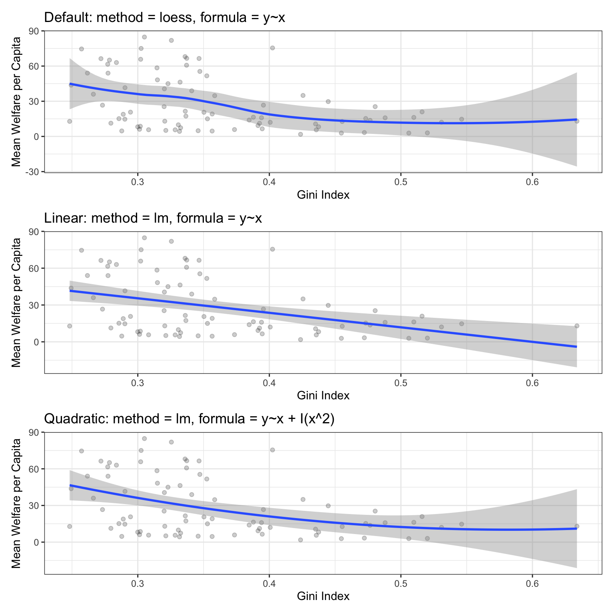
Error shading
If there isn’t much data at the extremes of the x-axis, the curve can be very uncertain. This is represented by the wider shaded area, which means that the true relationship might be anywhere within that area. Add the argument se = FALSE to geom_smooth() to remove this “standard error” shading.
3.3.4.3 Dates
We’ll need some different data for the next few plots. Run the following code to simulate some data with random dates in the year 2025, random rating on an ordinal scale from 1 to 5, and random scores on a continuous scale from 0-100 that increase over the year and have an inverted-U shaped relationship to rating We’ll use simulation a lot in this class to make data so we can change it and see how that affects our code output.
set.seed(8675309) # makes the simulation reproducible
n <- 10000 # number of data points to simulate
# make a vector of the first day of the month
d <- seq(as.POSIXct('2025-01-01'), as.POSIXct('2025-12-31'), by = "sec")
# sample n datetimes and randomly assign groups A:E
# create n scores from a random normal distribution
# where the mean depends on the month and rating
simdat <- tibble(
datetime = sample(d, size = n, replace = TRUE),
rating = sample(1:5, n, replace = TRUE),
mean = 50 + month(datetime) - 6 + abs(rating - 3)*5 - 5,
score = rnorm(n, mean, sd = 12)
)The datetime column contains both a date and a time, so use the date() function from
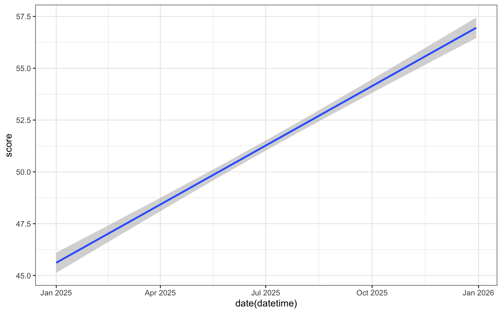
We can use scale_x_date() to set the date_breaks to be “1 month” apart. The date_labels argument uses a code for different date formats; you can see the full list of possibilities in the help for ?strptime. For example, %b means “Abbreviated month name”, whilst if you wanted to use a format like “2020/01/31” you could try "%Y/%m/%d".
ggplot(simdat, aes(x = date(datetime),
y = score)) +
geom_smooth(method = lm, formula = y~x) +
scale_x_date(name = "",
date_breaks = "1 month",
date_labels = "%b") +
scale_y_continuous(name = "Score")
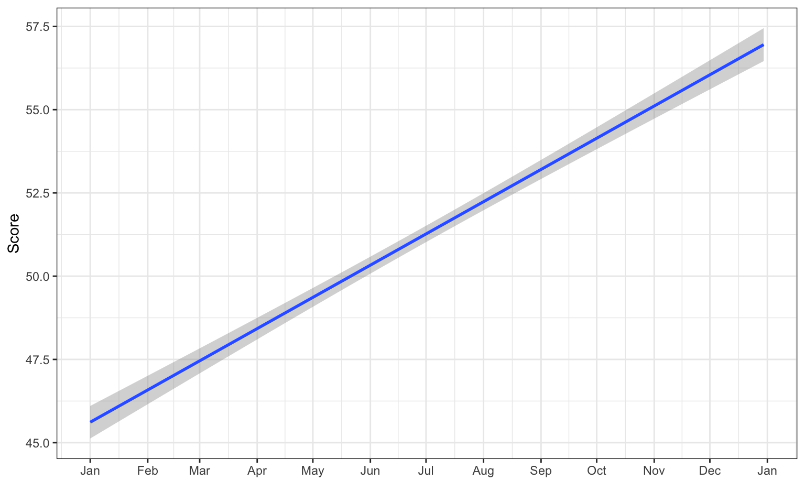
It looks like the score increases across the year, but is this change meaningful? See what the plot looks like when the y-axis spans the full range of possible scores from 0 to 100. You can plot the raw data points as well, but there are so many of them that it just looks like a blob, so make them transparent with alpha = 0.1.
ggplot(simdat, aes(x = date(datetime),
y = score)) +
geom_point(alpha = 0.1) +
geom_smooth(method = lm, formula = y~x) +
scale_x_date(name = "",
date_breaks = "1 month",
date_labels = "%b") +
scale_y_continuous(name = "Score",
breaks = seq(0, 100, 10)) +
coord_cartesian(ylim = c(0, 100)) # changes limits3.3.5 Overplotting
When you have a limited range of numeric values, such as an ordinal rating scale, sometimes overlapping data makes it difficult to see what is going on in a point plot. For example, the plot below shows score by rating, but because there are only 5 levels and a lot of data, it makes it hard to see exactly how many data points there are at each rating level.
In this section, we’ll explore a few options for dealing with this.
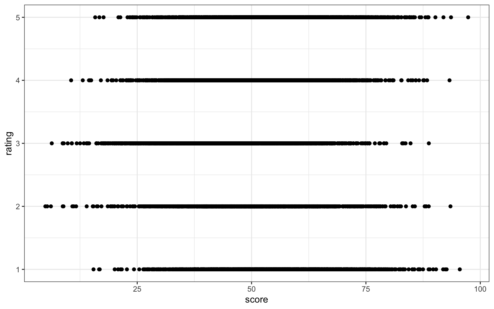
3.3.5.1 Jitter plot
You can use geom_jitter() to move the points around a bit to make them easier to see. You can also set alpha transparency. Here, the x-axis is continuous, so there is no need to jitter the width, but the y-axis is ordinal, so the height is jittered between -0.2 and +0.2 days away from the true y-value.
Change these values to understand what jitter is doing
3.3.5.2 Facets
Alternatively, you can use facet_wrap() to create a separate plot for each rating. facet_wrap() uses the tilde (~) symbol, which you can roughly translate as “by”, e.g., facet the plot by rating. The labeller function controls the labels above each plot. label_both specifies that we want both the variable name (rating) and the value (e.g., 1) printed on the plot to make it easier to read.
ggplot(simdat, aes(x = score)) +
geom_histogram(binwidth = 5,
boundary = 0,
fill = "dodgerblue",
color = "black") +
facet_wrap(~rating,
ncol = 1, # try changing this to 2
labeller = label_both) +
scale_x_continuous(name = "Score",
breaks = seq(0, 100, 10))
More plots styles
These are not, by any means, all the plot types that you can make in R. This chapter just gave you a basic overview, and we will go into more detail in Section 10.1). The further resources section at the end of this chapter lists many resources, but the R Graph Gallery is especially useful to get inspiration for the kinds of beautiful plots you can make in R.
3.4 Exercises
For the final step in this chapter, we will create a report of data visualisations. You may need to refer back to Chapter 2) to help you complete these exercises and you may also want to take a break before you work through this section. We’d also recommend you render at every step so that you can see how your output changes.
3.4.1 New Document
- Create and save a new quarto document named
plots_report.qmd - Give it the title “Personality Data”.
- Remove the default template text
- Add the code below in the set-up code chunk:
3.4.2 Summary
Create a level 2 heading titled “Overview”. Underneath this heading, write a short summary of what the data set contains (scores on a 5-factor personality questionnaire) and what each of the variables means (you can use the information from the personality_scores.json codebook).
3.4.3 Appropriate plots
Create a visualisation with an appropriate plot style for each question below:
- What does the distribution of scores look like for Agreeableness (
Ag)? - Are Extraversion (
Ex) and Openness (Op) correlated? - How many people completed the questionnaire each year? (hint:
year(date))
3.4.4 Combining plots
Duplicate the code for your first plot and create the same for each of the five personality factors. Combine these 5 plots into a single figure.
3.4.5 Polishing plots
For each plot:
- Create a level 2 heading in your quarto document and give it an informative title.
- Write a short summary that interprets the data shown in the plots - it’s not enough just to present visualisations, effective reports will also help the reader understand the conclusions they should draw from the plots you’ve presented.
- Make sure each plot has a figure caption.
- Organise your report so that the plots are shown after the text summary in each section.
3.4.6 Customising your report
- Look through the different themes available with
ggtheme and choose one to apply to all your plots. - Edit the YAML header of your quarto document so that your rendered report does not show any code, messages, or warnings.
- Set the default figure size to 8 x 5.
- Customise the figure size for your combined plot so it is readable
- Add a table of contents
3.4.7 Inappropriate plots
Pick one plot above and make a new version:
- Adjust the visual aesthetics to make it look as bad and as difficult to read as possible.
- Save the plot as a PNG image
- Post this plot to the week 3 thread on Teams and explain why it is so bad. Include the code in your post (see Appendix D for advice on posting code on Teams)
Glossary
| term | definition |
|---|---|
| argument | A variable that provides input to a function. |
| categorical | Data that can only take certain values, such as types of pet. |
| categorical | Data that can only take certain values, such as types of pet. |
| character | A data type representing strings of text. |
| continuous | Data that can take on any values between other existing values. |
| continuous | Data that can take on any values between other existing values. |
| data-type | The kind of data represented by an object. |
| default-value | A value that a function uses for an argument if it is skipped. |
| double | A data type representing a real decimal number |
| factor | A data type where a specific set of values are stored with labels; An explanatory variable manipulated by the experimenter |
| geom | The geometric style in which data are displayed, such as boxplot, density, or histogram. |
| integer | A data type representing whole numbers. |
| likert | A rating scale with a small number of discrete points in order |
| logical | A data type representing TRUE or FALSE values. |
| median | The middle number in a distribution where half of the values are larger and half are smaller. |
| nominal | Categorical variables that don't have an inherent order, such as types of animal. |
| numeric | A data type representing a real decimal number or integer. |
| observation | All of the data about a single trial or question. |
| ordinal | Discrete variables that have an inherent order, such as level of education or dislike/like. |
| outlier | A data point that is extremely distant from most of the other data points |
| render | To create a file (usually an image or PDF) or widget from source code |
| string | A piece of text inside of quotes. |
| tidy-data | A format for data that maps the meaning onto the structure. |
| value | A single number or piece of data. |
| variable | (coding): A word that identifies and stores the value of some data for later use; (stats): An attribute or characteristic of an observation that you can measure, count, or describe |
| vector | A type of data structure that collects values with the same data type, like T/F values, numbers, or strings. |
Further Resources
- ggplot2 cheat sheet
- Data visualisation using R, for researchers who don’t use R (Nordmann et al., 2021)
- Chapter 1: Data Visualisation of R for Data Science
- ggplot2 FAQs
- ggplot2 documentation
- Hack Your Data Beautiful workshop by University of Glasgow postgraduate students
- Chapter 28: Graphics for communication of R for Data Science
- gganimate: A package for making animated plots